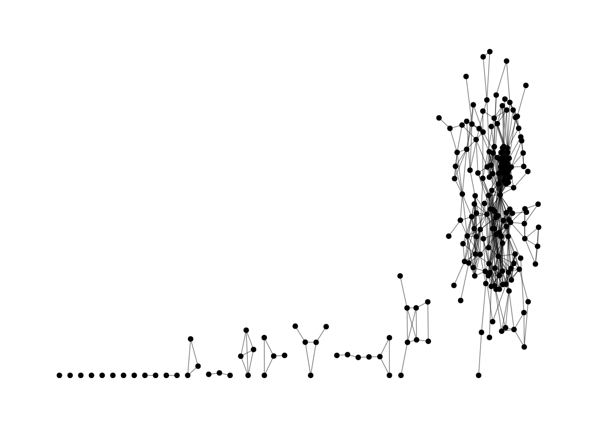
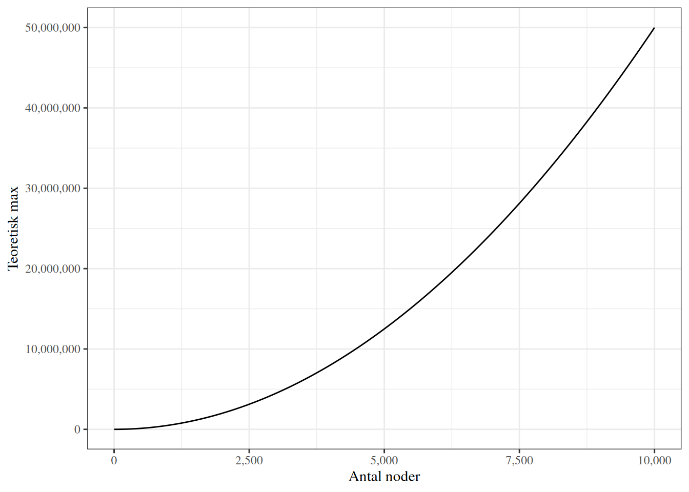

library(tidyverse)
library(Matrix)
library(igraph)
library(ggraph)Sammenhængskraft, Densitet, kliker og strukturelle huller
Transportsektoren i det danske elitenetværk
Data: Det danske elitenetværk
den <- read_csv("data/den17-no-nordic-letters.csv")Vha funktionen show.all.tags() fra custom_functions.R i functionsmappen, kan vi studere og udvælge specifikke tags, vi synes skal med for at indfange et bestemt område: Download costumfunctions.R her
source("functions/custom_functions.R")
head(show.all.tags(den), 25) Positions affiliations
A-kasse 193 14
Academics 927 71
Actors 65 7
Administration 789 66
Africa 13 1
Alternative 45 8
Animals 397 50
Architecture 1419 130
Art 753 100
Artists 245 30
Asia 5 1
Award 40 6
Baltic countries 11 2
Banks 899 69
BILH 190 45
Blood donation 72 5
Board of representatives 846 15
Boarding school 27 2
Borgerloen 11 1
Brazil 5 1
Business 1665 114
Business and Financial Affairs 86 12
Business association 3627 343
BYGG 282 43
Cancer 96 9Grafobjekt
Vi laver en sparse incidence eller bipartite adjacency matrix. Dvs en matrice med individer (name) i rækker og virksomheder m.v. (affiliation) i kolonner:
bi_adj <- xtabs(formula = ~ name + affiliation, data = den_sub, sparse = TRUE)Og laver vha matrix multiplikation \(individ \times individ\) matricen:
adj <- bi_adj %*% t(bi_adj)Jeg vil gerne vide hvilke værdier vores matrice indeholder. Så jeg kan overveje om den er vægtet eller ej. Da det er en sparse matrice vi har lavet kan vi dog ikke lave en simple table(). str() fortæller os hvad dataobjektet indeholder.
str(adj)Formal class 'dgCMatrix' [package "Matrix"] with 6 slots
..@ i : int [1:1552] 0 18 23 1 121 2 40 58 85 96 ...
..@ p : int [1:203] 0 3 5 14 21 27 31 41 47 55 ...
..@ Dim : int [1:2] 202 202
..@ Dimnames:List of 2
.. ..$ name: chr [1:202] "Agner Holmbjerg" "Allan Junge" "Allan Linneberg-Agerholm" "Anders Egehus" ...
.. ..$ name: chr [1:202] "Agner Holmbjerg" "Allan Junge" "Allan Linneberg-Agerholm" "Anders Egehus" ...
..@ x : num [1:1552] 2 2 2 2 1 2 1 1 1 1 ...
..@ factors : list()@x indeholder matrices værdier (ud over 0): Så kan vi tælle:
table(adj@x)
1 2 3 4 5 7
1078 444 23 5 1 1 Der er altså (444 + 23 + 5 + 1 + 1 = 474) / 2 individer, der mødes mere end et sted. Så der er en mulighed for at lade edges være vægtede. I dette eksempel vælger jeg at se bort fra vægten (dvs vi undlader at skrive weighted = TRUE).
gr <- adj %>% graph_from_adjacency_matrix(mode = "undirected", diag = FALSE) %>% simplify()
grIGRAPH c1aeb4e UN-- 202 675 --
+ attr: name (v/c)
+ edges from c1aeb4e (vertex names):
[1] Agner Holmbjerg --Bo Tarp
[2] Agner Holmbjerg --Carl Johan Hansen
[3] Allan Junge --Lars Goth
[4] Allan Linneberg-Agerholm--Dan Nissen
[5] Allan Linneberg-Agerholm--Hans Christian Munck 10772
[6] Allan Linneberg-Agerholm--Jens Dalsgaard Loegstrup
[7] Allan Linneberg-Agerholm--Jesper Eigen Moeller
[8] Allan Linneberg-Agerholm--Joergen Groth Dirksen
+ ... omitted several edgesgr %>% ggraph() +
geom_edge_link0(edge_width = 0.3, edge_alpha = .5) +
geom_node_point() +
theme_graph()Using "stress" as default layout
Sammenhængskraft - Cohesion
I det følgende skal vi se på forskellige måder at at studere et netværks ‘sammenhængskraft’ eller forbundethed. Hvor sammenfiltret er det?
Densitet: edge_density()
Det mest simple og intuitive mål for ‘sammenfiltrethed’ er at udtrykke det faktiske antal af forbindelser i et netværk som en andel af de teoretisk mulige.
Lad os sige vi har et netværk med \(n=25\) individer. Hvis alle har en forbindelse til alle vil der være: \[n \times (n-1)\] forbindelser, hvis forbindelserne er retningsbestemte, så \(A \rightarrow B \nRightarrow A \leftarrow B\), dvs. forbindelsen A-B medfører ikke nødvendigvis forbindelsen B-A.
og \[(n \times (n-1)) \over 2\] forbindelser, hvis forbindelserne er symmetriske per definition, \(A - B = B-A\).
Det kalder vi det teoretiske max og densiteten er således: \[ {E \over n \times (n-1)} \quad \text{eller} \quad {2E \over n \times (n-1)}, \quad \text{hvor er det faktiske antal forbindelser} \]

transitivity(largest_component(gr))[1] 0.6948424